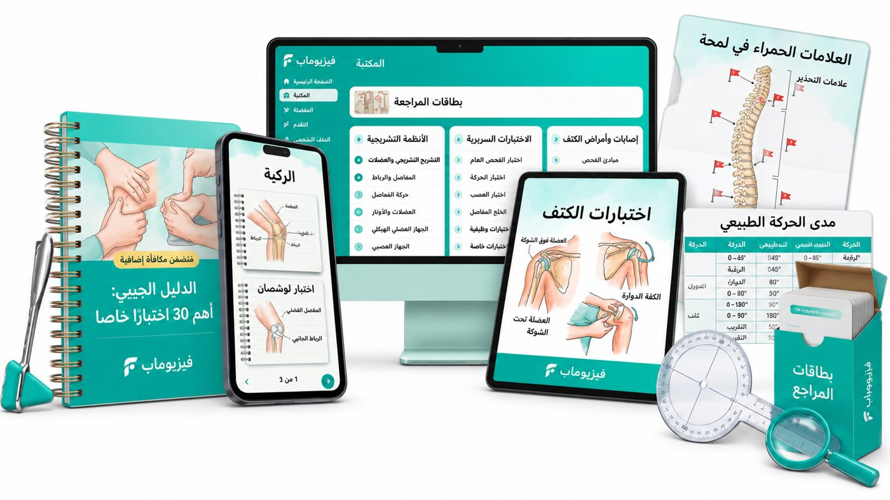
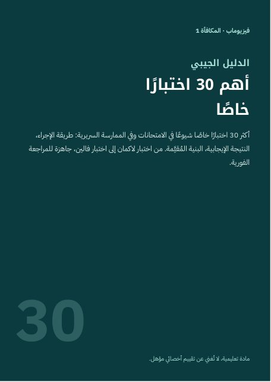
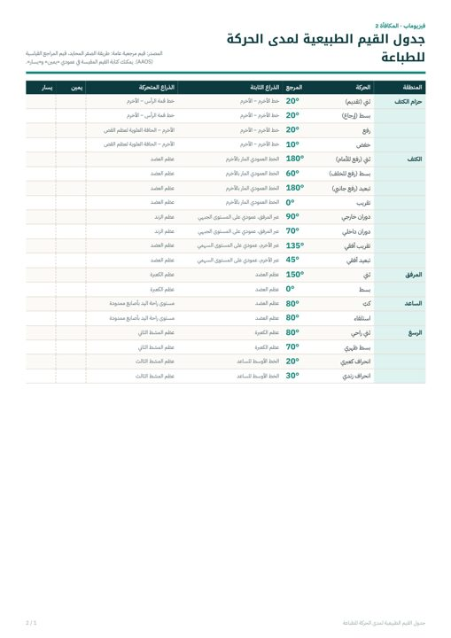
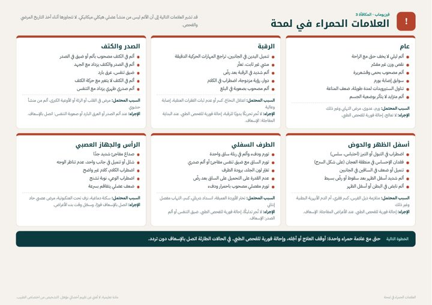

فيزيوماب · 54 موضوعًا وأكثر من 160 صفحة من الخرائط المرئية من التقييم إلى إعادة التأهيل · 3 هدايا مجانية
العلاج الطبيعي من التقييم إلى إعادة التأهيل، بالخرائط المرئية وبمراجعة تُثبّت المعلومة فعلًا. يمكنك فتح التطبيق من هذه الصفحة في أي وقت، على الهاتف أو الكمبيوتر.

54 موضوعًا بالخرائط المرئية، وبطاقة لكل اختبار وكل حالة مرضية، وسؤالان للمراجعة في كل صفحة، ووضع الذاكرة (نظام لايتنر)، و3 مستويات (أساسي، متوسط، سريري)، مع الأيام المتتالية والنقاط والإتقان والأوسمة.
افتح التطبيق ‹ 📄نسخة PDF (للتنزيل والطباعة)المواضيع الـ54 كلها في 201 صفحة: خرائط مرئية، وبطاقات معرفية، وخلاصات سريرية، وأسئلة مراجعة، وفي النهاية الإجابات مع الشرح.
افتح ملف PDF · 22.1 MB3 هدايا مجانية

أكثر 30 اختبارًا خاصًا شيوعًا في الامتحانات والممارسة السريرية: طريقة الإجراء، ومعنى النتيجة الإيجابية، والبنية المُقيَّمة. بحجم الجيب (A6).
فتح / حفظ PDF · 33 صفحة · 0.3 MB
القيم المرجعية لكل مفصل من الكتف إلى الكاحل، مع خانات لتسجيل القيم المقيسة في الجهتين اليمنى واليسرى (A4، صفحتان).
فتح / حفظ PDF · 2 صفحة · 0.1 MB
العلامات التي تشير إلى أن الألم ليس ميكانيكيًا وقد يستدعي إحالة فورية للفحص الطبي، حسب مناطق الجسم في ورقة واحدة (A4 أفقي).
فتح / حفظ PDF · 1 صفحة · 0.1 MBكيف تبدأ
- أضف التطبيق إلى الشاشة الرئيسيةافتح التطبيق، ثم اختر «إضافة إلى الشاشة الرئيسية» من قائمة المشاركة في المتصفح. وفي المرة القادمة يفتح بلمسة واحدة.
- ابدأ بالموضوع 1 وأجب عن السؤالينكل موضوع 3 صفحات (الخريطة المرئية، والبطاقة المعرفية، والخلاصة السريرية)، وفي نهاية كل صفحة سؤالان.
- وضع الذاكرة مرة يوميًاتعود الأسئلة التي أخطأت فيها في اليوم التالي، والتي أتقنتها على فترات متباعدة تدريجيًا، تلقائيًا.
- اطبع الهداياالدليل الجيبي في جيب معطفك، وجدول مدى الحركة والعلامات الحمراء بجانب سرير العلاج.
افتح اليوم في التطبيق الموضوع 1 («المستويات والمحاور») وأجب عن أول سؤالين. تنهي الموضوع الواحد في 10 دقائق.
مادة تعليمية ومرجعية لطلاب العلاج الطبيعي وأخصائيي العلاج الطبيعي، لا تُغني عن تقييم أخصائي مؤهل. يُحفظ تقدّمك في متصفح الجهاز المستخدم (كل جهاز على حدة).